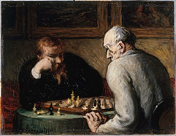
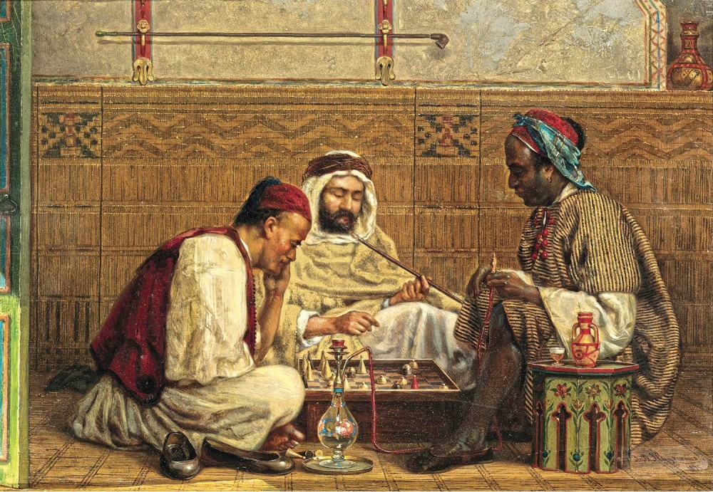

История шахмат насчитывает около полутора тысяч лет. Вероятно, старейшим известным предком шахмат является индийская игра чатуранга, заимствованная персами, которые видоизменили её и назвали шатрандж. После арабского завоевания Персии в VII веке шатрандж распространился в пределах арабского халифата, а от арабов стал известен европейцам. Близкий к современному облик шахматы приобрели в конце XV века, когда ныне существующие ходы получили ферзь и слон, до того — фигуры с ограниченной подвижностью. Игра существенно изменилась, стала более быстрой, преимущество первого хода у белых сделало возможным появление дебютов, в которых белые готовят атаку на ранней стадии партии, и стимулировало развитие дебютной теории.
В середине XIX века возникает система международных соревнований, сначала — в виде матчей между сильнейшими шахматистами разных городов и стран, со второй половины столетия — также и в виде международных турниров (конгрессов). В 1886 году Вильгельм Стейниц победил Иоганна Цукерторта в матче, по условиям которого победитель получал право объявить себя чемпионом мира по шахматам. От этого события ведётся хроника шахматных чемпионов мира. В 1924 году была основана Международная шахматная федерация (ФИДЕ). После смерти четвёртого чемпиона мира Александра Алехина в 1946 году следующие обладатели титула определялись в результате системы спортивного отбора по правилам, утверждённым ФИДЕ. В конце XX века в шахматах произошёл раскол: чемпион мира Гарри Каспаров и претендент Найджел Шорт провели очередной матч не под эгидой ФИДЕ, и в 1993—2006 годах одновременно разыгрывались звания чемпиона мира по версии ФИДЕ и по «классической» версии. С 2006 года розыгрыш звания чемпиона мира унифицирован, и с 2013 года им владеет норвежец Магнус Карлсен.
Во второй половине XX века в мире шло развитие компьютерных шахмат. Если в 1970-х годах программы играли на достаточно слабом уровне, то в 1997 году разработанный IBM компьютер Deep Blue победил в матче Гарри Каспарова со счётом 3½ : 2½, а к началу XXI века превосходство шахматных программ над человеком стало общепризнанным.
Существует древняя легенда, которая приписывает создание шахмат некоему брамину. За свое изобретение он попросил у раджи незначительную, на первый взгляд, награду: столько пшеничных зёрен, сколько окажется на шахматной доске, если на первую клетку положить одно зерно, на вторую - два зерна, на третью - четыре зерна и т. д. Оказалось, что такого количества зерна нет на всей планете (оно равно 264 − 1 ≈ 1,845×1019 зёрен, чего достаточно, чтобы заполнить хранилище объёмом 180 км³). Так это было, или не совсем, сказать сложно, но, так или иначе, родиной шахмат является Индия.
Не позже начала VI века на северо-западе Индии появилась первая известная нам игра, родственная шахматам — чатуранга. Она имела уже вполне узнаваемый «шахматный» вид, но принципиально отличалась от современных шахмат двумя особенностями: игроков было четверо, а не двое (играли пара на пару), а ходы делались в соответствии с результатами бросания игральных костей. Каждый игрок имел по четыре фигуры (колесница (ладья), конь, слон, король) и по четыре пешки. Конь и король ходили так же, как в шахматах, колесница и слон были гораздо слабее нынешних шахматных ладьи и слона. Ферзя не было вовсе. Для выигрыша в партии нужно было уничтожить всё войско противников.
В том же VI или, возможно, в VII веке чатуранга была заимствована арабами. На Арабском Востоке чатуранга была преобразована: игроков стало двое, каждый получил под управление два комплекта фигур чатуранги, один из королей стал ферзём (ходил на одно поле по диагонали).  От костей отказались, стали ходить по одному ходу строго по очереди. Победа стала фиксироваться не по уничтожению всех фигур [противника], а по постановке мата либо пата, а также при завершении игры с королём и хотя бы одной фигурой против одного короля (последние два варианта были вынужденными, так как поставить мат со слабыми фигурами, унаследованными от чатуранги, удавалось далеко не всегда). Получившаяся игра называлась у арабов — шатрандж, у персов — «шатранг». Позднее, попав к таджикам, шатрандж получил на таджикском название «шахмат» (в переводе — «властитель повержен»). Первое упоминание о шатраднже датируется приблизительно 550 годом. 600 год — первое упоминание шатранджа в художественной литературе — персидской рукописи «Карнамук». В 819 году при дворе халифа аль-Мамуна в Хоросане прошёл турнир трёх сильнейших игроков того времени: Джабира ал-Куфи, Абылджафара Ансари и Зайраба Катана. В 847 году вышла первая шахматная книга, которую написал Аль-Алли.